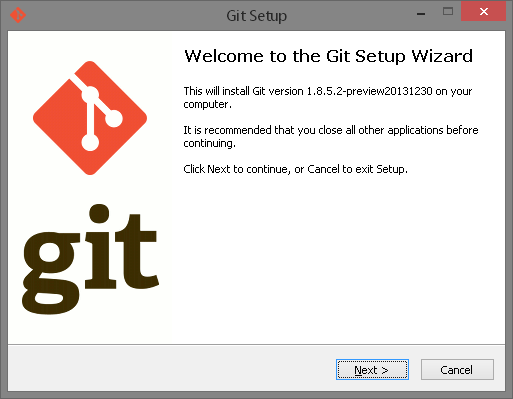
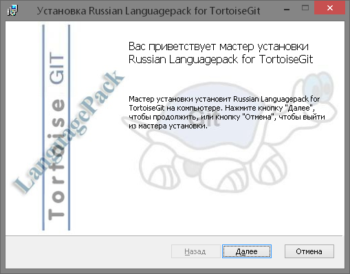
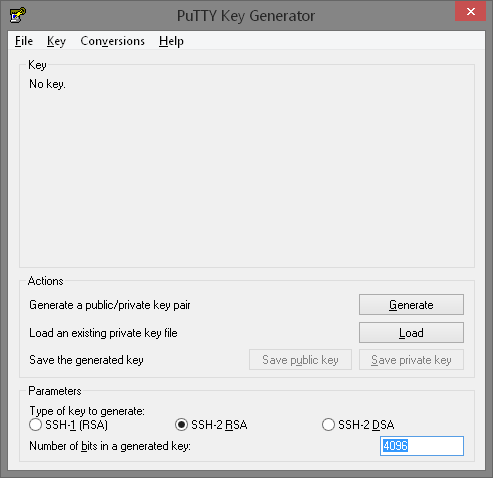
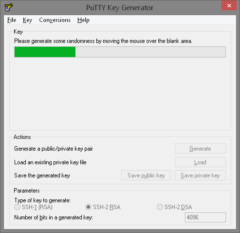
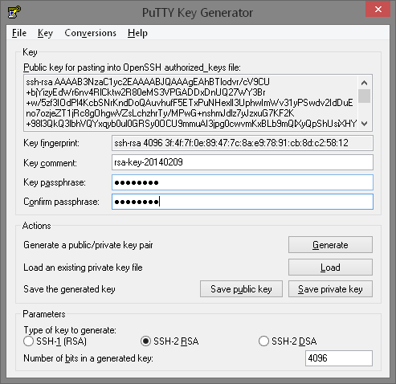
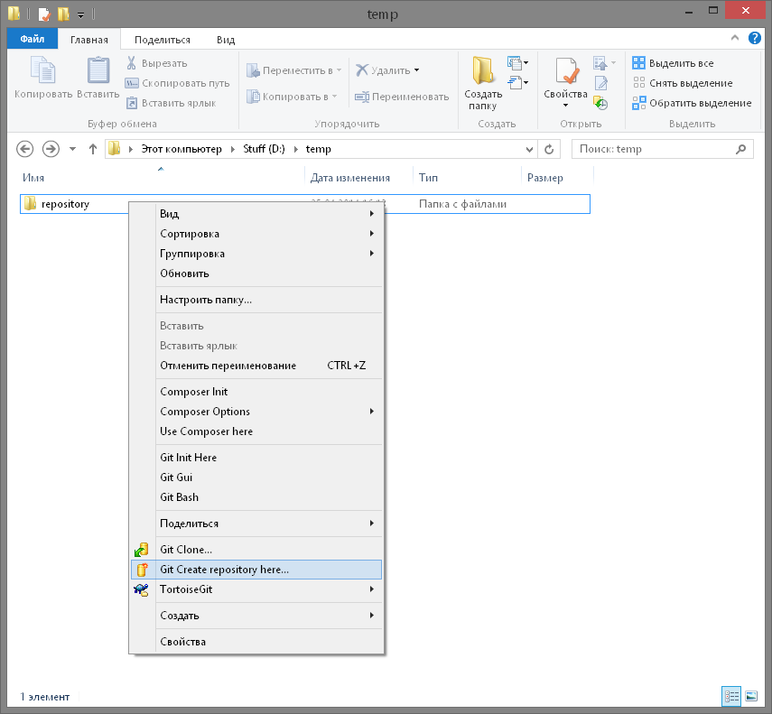

Система контроля версий позволяет отслеживать историю коллекции файлов и включает в себя функционал для возвращения коллекции файлов другой версии. Каждая версия захватывает снимок файлов в определенный момент времени. Набор файлов, как правило, исходный код на языке программирования, но типичная система контроля версий может работать с любым типом файлов.
Набор файлов и их полная история хранятся в репозитории(repository).
Снимки могут быть использованы, чтобы изменить свою коллекцию файлов. Можно, например, возвращается в набор файлов в состояние от 2 дней назад. Или вы можете переключаться между версиями для экспериментальных функций.
Распределенная система контроля версий, не обязательно имеет центральный сервер, который хранит данные.
Пользователь может скопировать существующий репозиторий. Этот процесс копирования обычно называют клонирование в распределенной системе управления версиями и полученное хранилище может упоминаться как клон.
Обычно существует центральный сервер для хранения репозитория, но все клонированные хранилища являются его полной копией. Решение, какой из экземпляров считается центральным хранилищем сервер чисто выборочная и не привязаны к возможностям самой распределенной системы контроля версий.
Каждый клон содержит полную историю коллекции файлов и имеет ту же функциональность, что и оригинальный репозиторий.
Каждый репозиторий может обменять версии файлов с других хранилищах, транспортируя эти изменения. Обычно это делается с помощью хранилища работающего на сервере, который, кроме локальной машине разработчика, всегда он-лайн.
Git - это распределенная система контроля версий.
Git появился в результате разработки ядра Linux и используется многими популярными Open Source проектами, например Android, а также многими коммерческими организациями.
Ядро Git было изначально написано на языке программирования C, но Git также вновь реализован и на других языках, например, Java, Ruby и Python.
После клонирования или создания хранилища пользователь имеет полную копию в хранилище. Пользователь выполняет операции управления версиями в своем локальном репозитории, например создает новые версии, отменяет изменения и т.д.
Вы можете настроить хранилище быть пустими или не-пустыми.
Если вы хотите удалить репозиторий Git, вы можете просто удалить папку, содержащую хранилище.
Git позволяет пользователю синхронизировать локальный репозиторий с удаленными(remote) репозиториями.
Пользователи с соответствующими правами доступа могут подтолкнуть(push) изменения от их локального репозитория в удаленнй репозиторий. Они также могут принести или тянуть изменения от других хранилищ в их локальный репозиторий Git.
Для совершения большинства операций в Git'е необходимы только локальные файлы и ресурсы, т.е. обычно информация с других компьютеров в сети не нужна. Если вы пользовались централизованными системами, где практически на каждую операцию накладывается сетевая задержка, вы, возможно, подумаете, что боги наделили Git неземной силой. Поскольку вся история проекта хранится локально у вас на диске, большинство операций кажутся практически мгновенными.
Перед сохранением любого файла Git вычисляет контрольную сумму, и она становится индексом этого файла. Поэтому невозможно изменить содержимое файла или каталога так, чтобы Git не узнал об этом. Эта функциональность встроена в сам фундамент Git'а и является важной составляющей его философии. Если информация потеряется при передаче или повредится на диске, Git всегда это выявит.
Практически все действия, которые вы совершаете в Git'е, только добавляют данные в базу. Очень сложно заставить систему удалить данные или сделать что-то неотменяемое. Можно, как и в любой другой СКВ, потерять данные, которые вы ещё не сохранили, но как только они зафиксированы, их очень сложно потерять, особенно если вы регулярно отправляете изменения в другой репозиторий.
Теперь внимание. Это самое важное, что нужно помнить про Git, если вы хотите, чтобы дальше изучение шло гладко.
В Git'е файлы могут находиться в одном из трёх состояний: зафиксированном, изменённом и подготовленном. "Зафиксированный" значит, что файл уже сохранён в вашей локальной базе. К изменённым относятся файлы, которые поменялись, но ещё не были зафиксированы. Подготовленные файлы — это изменённые файлы, отмеченные для включения в следующий коммит.
Таким образом, в проектах, использующих Git, есть три части: каталог Git'а (Git directory), рабочий каталог (working directory) и область подготовленных файлов (staging area).
Каталог Git'а — это место, где Git хранит метаданные и базу данных объектов вашего проекта. Это наиболее важная часть Git'а, и именно она копируется, когда вы клонируете репозиторий с другого компьютера.
Рабочий каталог — это извлечённая из базы копия определённой версии проекта. Эти файлы достаются из сжатой базы данных в каталоге Git'а и помещаются на диск для того, чтобы вы их просматривали и редактировали.
Область подготовленных файлов — это обычный файл, обычно хранящийся в каталоге Git'а, который содержит информацию о том, что должно войти в следующий коммит. Иногда его называют индексом (index), но в последнее время становится стандартом называть его областью подготовленных файлов (staging area).
Стандартный рабочий процесс с использованием Git'а выглядит примерно так:
Если рабочая версия файла совпадает с версией в каталоге Git'а, файл считается зафиксированным. Если файл изменён, но добавлен в область подготовленных данных, он подготовлен. Если же файл изменился после выгрузки из БД, но не был подготовлен, то он считается изменённым. В главе 2 вы узнаете больше об этих трёх состояниях и как можно либо воспользоваться этим, либо пропустить стадию подготовки.
Настало время немного ознакомиться с использованием Git'а. Первое, что вам необходимо сделать, — установить его. Есть несколько способов сделать это, но сейчас мы рассмотрим способ его установки на Windows + интерфейс TortoiseGit для его более удобного использования.

Версия, показанная на экране может отличаться от изображенного здесь, конечно. То есть устанавливаете версию Git 1.8.5.2 или более поздней версии.
git и появление перечня всех основнйх комманд будет значит что все в порядке.
RSA является асимметричным алгоритмом шифрования используется для проверки подлинности пользователей без использования паролей. Он используется вместо пароля просто потому, что обеспечивает механизм для проверки, кто ты, не давая на другой конец информации о вас. Для создания такого ключа нам понадобится PuTTYgen. Он устанавливается вместе с TortoiseGit, и вы можете найти его в меню Пуск.

Number of bits in a generated key в правом нижнем углу, до 4096. Это текущая приемлемая длина RSA ключей.Generate, для начала генерации.

Save private key и сохраните его в надежном месте.Git хранит свои настройки в текстовых файлах, формат которых похож на ini-файл, но файл обязательно должен заканчиваться переводом строки. Этих файлов несколько, и они читаются по-очереди, таким образом, что значение каждого параметра из следующего прочитанного файла имеет приоритет (заменяет) над значениями, прочитанными ранее. Вот эти файлы (в порядке увеличения приоритета): системный файл, файл текущего пользователя, файл настроек репозитория. Пути к первым двум из этих файлов в Windows достаточно нетривиальны, но, к счастью, TortoiseGit предоставляет простое средство для их редактирования.
Им мы и воспользуемся.
Git имеет огромное количество настроек, большая часть которых нужна для того, чтобы сделать работу с ним комфортной, подходящей Вам по стилю. Но несколько настроек относятся не к области комфорта, а просто необходимы, и именно ими мы и должны сейчас заняться. Вот эти настройки: Ваше имя (ник) и Ваш e-mail адрес. Что эти настройки означают?
Имя Это просто ваше имя, которое будет вписываться в историю изменений, чтобы можно было определить автора этих изменений. Эту опцию лучше установить в пользовательском файле настроек (если, конечно, Вы не хотите в разных репозитариях представляться разными авторами).
E-mail адрес Кроме имени, Git вписывает в коммиты и e-mail адрес. Все, написанное ранее по отношению к имени, имеет смысл и для e-mail адреса.
Для редактирования глобальных настроек git с помошью интерфейса TortoiseGit на пустом месте в менеджере файлов (или на рабочем столе) вызовите контекстное меню и выберите в нем пункт настроек TortoiseGit. Если вы вызовете контекстное меню для директории с репозитарием, вы будет править файл настроек Git для этого репозитария, а сейчас нам это не нужно.
Перейдите на вкладку “Git” в дереве слева, и Вы увидите окно настроек параметров Git с помощью TortoiseGit.
Здесь Вы видите поля для ввода обязательных настроек, и три кнопки для редактирования файлов настроек Git: файла системного, пользовательского, и файла настроек репозитария. Нажатие кнопки приведет к открытию соответствующего файла в текстовом редакторе. Вы можете как заполнить поля в этом окне, так и открыть и отредактировать файлы. Вписывание настроек в по- ля ввода приведет к автоматическому редактированию файла настроек уровня пользователя, если установлена опция “Save as Global” и файла настроек репозитария, если эта опция не установлена.
Заполните поля Name и Email, и проследите, чтобы была включена опция Save as Global.
